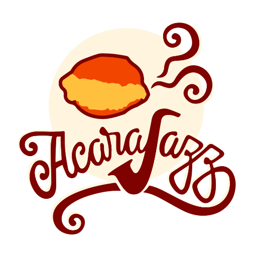

Acarajé, moquecas e comida baiana de verdade, com a chef Bia Souza.
Vila Mariana · São Paulo
Como cuidamos dos dados que você envia pelo site.
oacarajazz.com
Curso · lista de interesse aberta
História, ancestralidade, técnica e prática com a chef Bia Souza.
Acarajazz · Vila Mariana, SP
Jogo grátis · sem aposta
A aposta em que todo mundo ganha. Faça um acarajé com a Bia, do feijão até a mesa.
Caprichou? Ganha desconto na loja do Acarajazz.